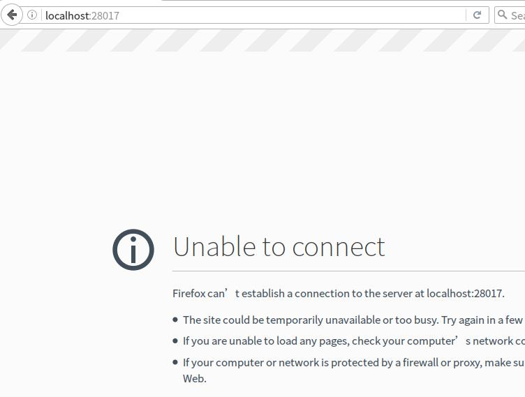
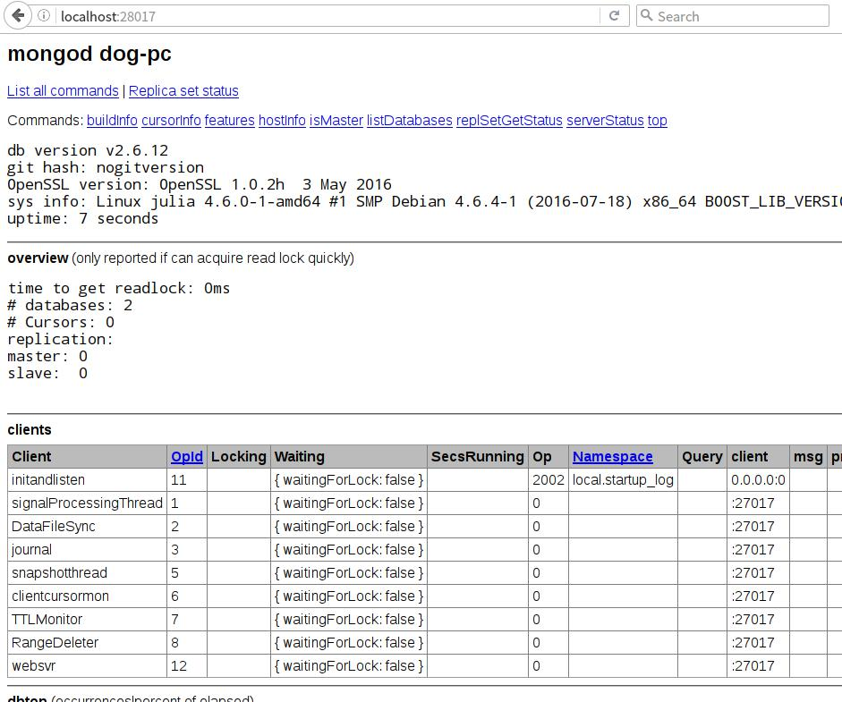

在项目开发过程中,会有一些日志的记录,如果将其存储在RDBMS中有时并不是1个很理智的做法,因此我们会选择一些NoSQL来辅助进行处理。
而在NoSQL中,公司的团队使用mongodb来进行日志的存储,对于这种文档型的数据库,拿来存储日志还是可以的,如果用来做订购车业务的话还是需要斟酌一下。
在MongoDB中提供了1种Web的监控方式可以方便的查看数据库系统当前的状态,这里假设我们使用debian发行版:
dog@dog-pc:~$ sudo aptitude install mongodb
对于RedHat系可以使用yum来进行安装。下面我们来看下当前安装的版本:
dog@dog-pc:~$ mongod --version db version v2.6.12 2016-11-17T22:06:49.097+0800 git version: nogitversion 2016-11-17T22:06:49.097+0800 OpenSSL version: OpenSSL 1.0.2h 3 May 2016
可以看到当前的版本为2.6.12。默认情况下,数据库监听的端口是27017,而其对应的Web端口是监听端口加上1000得到的数字,即28017。
但是当我们访问http://localhost:28017的时候却看到如下的界面:

可以很幸运的看到,当前的端口无法连接。
下面我们通过2种方式来实现Web端口的正常运行:
方法一
首先我们先关闭默认的mongodb服务:
dog@dog-pc:~$ sudo service mongodb stop dog@dog-pc:~$ sudo rm /var/lib/mongodb/mongod.lock
然后我们手动进行启动:
dog@dog-pc:~$ mongod --dbpath=/home/dog/db --httpinterface 2016-11-17T21:52:18.358+0800 [initandlisten] MongoDB starting : pid=3636 port=27017 dbpath=/home/dog/db 64-bit host=dog-pc ... 2016-11-17T21:53:18.501+0800 [clientcursormon] mapped (incl journal view):160 2016-11-17T21:52:18.500+0800 [websvr] admin web console waiting for connections on port 28017
可以看到最后1行添加了1个web的终端监听在28017端口上。
在这里,我们通过选项--dbpath指定mongodb的数据库路径,然后通过--httpinterface选项开启HTTP的接口,这样就可以访问Web监控页面了,如下所示:

方法二
从上面的方法一可以看出,由于我们没有开启httpinterface选项导致无法访问对应的页面,我们可以通过如下的方式在配置中进行设置:
... httpinterface=true
然后我们重启mongodb服务即可看到上述的页面了。